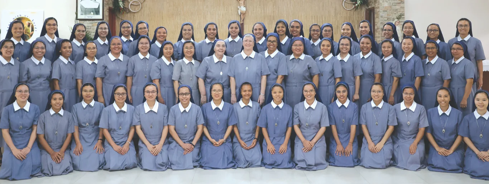

Tentang Kami

Kongregasi Misionárius Abdi-Abdi Sakramentu Mahakudus didirikan oleh Mo. Caterina Zaccini. Kongregasi ini berfokus pada pelayanan Ekaristi dan karya misioner dalam Gereja.
Ancelle Missionarie del Santissimo Sacramento
Ekaristia Misionária
“Deit iha Ekaristia mak ita bele hetan forsa atu sai testemunha ba Nia.”
Kongregasi Misionárius Abdi-Abdi Sakramentu Mahakudus didirikan oleh Mo. Caterina Zaccini. Kongregasi ini berfokus pada pelayanan Ekaristi dan karya misioner dalam Gereja.

Jln. 003 Dahlia – Batu Cermin
Komodo, Manggarai Barat
Flores – Nusa Tenggara Timur
HP: +62 822-4624-9890